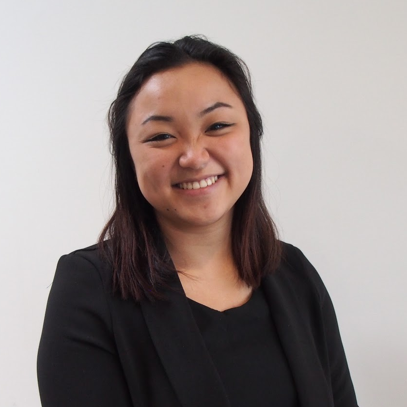

<div class="bg-white" id="about">
		<div class="container">
			<div class="row">
				<div class="col-lg-8 offset-lg-2 text-xs-center">
					<div class="nk-gap-4 mt-9"></div>

					<h2 class="display-4">About Me</h2>
					<div class="nk-gap mnt-6"></div>
					<div class="col-lg-12">
						
					</div>
					<div class="col-lg-12">
						<p>
							<br/>
							Hi, I'm Caitlyn Michele Ya Kodric! 
							<br/>
							<br/>
							Designer. Green Thumb. Potter. Painter. 
							<br/>
							<br/>
							I'm currently a student at the University of Waterloo studying Systems Design Engineering. 
							I have a passion for arts and would love the opportunity to work in design. 
							<br />
							<br/>
							Say hello! Send me an message at <a href="mailto:c.kodric@gmail.com">c.kodric@gmail.com</a>.</a>
				
						</p>
					</div>

					<!--  -->

					<!-- <div class="nk-gap-4 mt-25"></div> -->
				</div>
			</div>
		</div>
	</div>